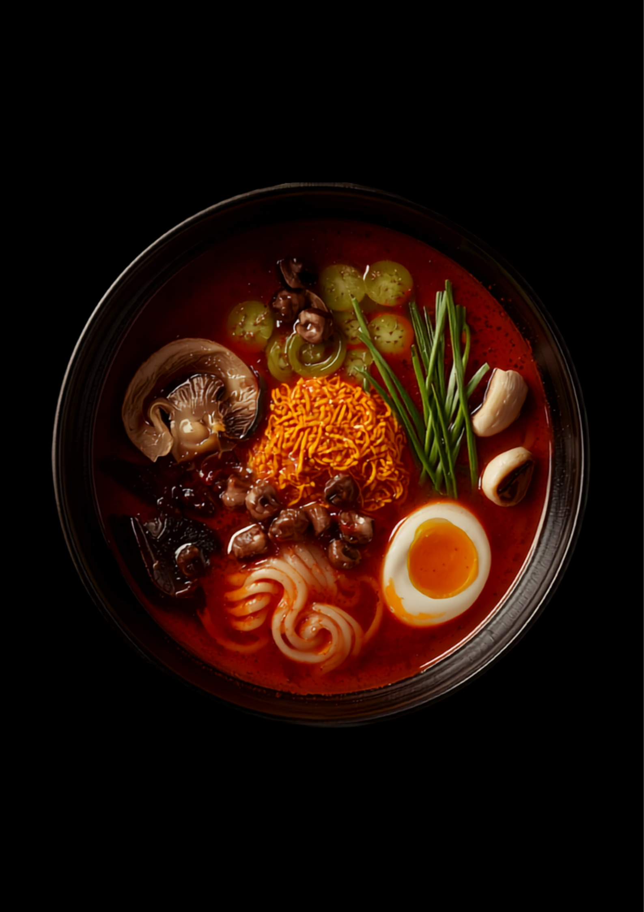

<meta charset="UTF-8" />
<meta name="viewport" content="width=device-width, initial-scale=1.0" />
<title>辛麺 三郎｜今夜、何辛でいく？｜西新の辛麺専門店・深夜営業</title>
<meta name="description" content="福岡・西新の路地にある辛麺専門店『辛麺 三郎』。人気店の暖簾分け、海豚やで7年修行した大将が作る鶏ガラベースの真っ赤なスープ。0辛から50辛まで選べて、こんにゃく麺ならカロリーひかえめ。トマト辛麺・チーズ辛麺も。深夜2時（週末は朝5時）まで営業。" />
<meta property="og:type" content="website" />
<meta property="og:title" content="辛麺 三郎｜今夜、何辛でいく？" />
<meta property="og:description" content="西新の辛麺専門店。0辛〜50辛、こんにゃく麺でヘルシー。深夜まで開いている、二軒目のラスボス。" />
<meta property="og:image" content="https://jinshanxia74-star.github.io/sample-sites/karamen-saburo-hero.png" />
<link rel="canonical" href="https://jinshanxia74-star.github.io/sample-sites/karamen-saburo.html">
<meta property="og:url" content="https://jinshanxia74-star.github.io/sample-sites/karamen-saburo.html">
<meta property="og:locale" content="ja_JP">
<meta name="twitter:card" content="summary_large_image">
<meta name="theme-color" content="#120D0D" />

<script type="application/ld+json">
{
  "@context": "https://schema.org",
  "@type": "Restaurant",
  "name": "辛麺 三郎",
  "servesCuisine": [
    "辛麺",
    "ラーメン",
    "居酒屋"
  ],
  "image": "https://jinshanxia74-star.github.io/sample-sites/karamen-saburo-hero.png",
  "priceRange": "￥￥",
  "telephone": "+81-92-834-3344",
  "address": {
    "@type": "PostalAddress",
    "addressRegion": "福岡県",
    "addressLocality": "福岡市早良区",
    "streetAddress": "西新（路地の一角）",
    "addressCountry": "JP"
  },
  "openingHours": "Mo-Su 18:00-02:00",
  "url": "https://jinshanxia74-star.github.io/sample-sites/karamen-saburo.html"
}
</script>

<style>
  @import url('https://fonts.googleapis.com/css2?family=Shippori+Antique+B1&family=Noto+Sans+JP:wght@400;500;700&family=Chakra+Petch:wght@500;600;700&display=swap');

  :root {
    --bg: #120D0D;
    --surface: #1E1414;
    --surface-2: #271A1A;
    --primary: #D42B2B;
    --accent: #FF7A3D;
    --text: #F5EDE8;
    --muted: #9C8A85;
    --line: #3A2626;
    --brush: 'Shippori Antique B1', sans-serif;
    --sans: 'Noto Sans JP', sans-serif;
    --num: 'Chakra Petch', sans-serif;
  }

  * { margin: 0; padding: 0; box-sizing: border-box; }
  html, body { overflow-x: hidden; }
  html { scroll-behavior: smooth; }

  body {
    font-family: var(--sans);
    background: var(--bg);
    color: var(--text);
    line-height: 1.9;
    font-size: 16px;
    -webkit-font-smoothing: antialiased;
  }
  body::before {
    content: "";
    position: fixed; inset: 0; z-index: -2;
    background:
      radial-gradient(circle at 50% -10%, rgba(212,43,43,0.22), transparent 45%),
      radial-gradient(circle at 90% 110%, rgba(255,122,61,0.12), transparent 40%),
      var(--bg);
  }

  .brush { font-family: var(--brush); }
  .num { font-family: var(--num); }
  .wrap { max-width: 1080px; margin: 0 auto; padding: 0 clamp(1.2rem, 5vw, 3rem); }

  .eyebrow {
    font-family: var(--num);
    letter-spacing: 0.32em;
    font-size: 0.75rem;
    text-transform: uppercase;
    color: var(--accent);
    display: inline-block;
    margin-bottom: 0.9rem;
  }

  /* ============ ヒーロー ============ */
  .hero { position: relative; min-height: 92vh; display: flex; align-items: center; padding: clamp(3rem, 8vw, 5rem) 0; }
  .hero-inner { display: grid; grid-template-columns: 1.05fr 0.95fr; gap: clamp(1.5rem, 4vw, 3rem); align-items: center; }
  .badge-night {
    display: inline-flex; align-items: center; gap: 0.5rem;
    border: 1px solid var(--primary);
    color: var(--primary);
    font-family: var(--num);
    font-size: 0.78rem;
    letter-spacing: 0.16em;
    padding: 0.4rem 1rem;
    border-radius: 4px;
    margin-bottom: 1.4rem;
  }
  .hero h1 {
    font-family: var(--brush);
    font-size: clamp(3rem, 12vw, 6rem);
    line-height: 1.02;
    letter-spacing: 0.04em;
    margin-bottom: 0.4rem;
  }
  .hero h1 .r { color: var(--primary); }
  .hero .copy {
    font-family: var(--brush);
    font-size: clamp(1.4rem, 4.6vw, 2.3rem);
    color: var(--accent);
    margin: 1.2rem 0 1rem;
    letter-spacing: 0.05em;
  }
  .hero p.lead { color: #D6C7BF; max-width: 34ch; }
  .hero-cta { margin-top: 1.7rem; display: flex; flex-wrap: wrap; gap: 0.8rem; }
  .btn {
    display: inline-block; text-decoration: none;
    font-family: var(--num); letter-spacing: 0.1em; font-weight: 600;
    padding: 0.9rem 1.7rem; border-radius: 5px;
    transition: transform 0.2s ease, background 0.2s ease, box-shadow 0.2s ease;
  }
  .btn-fire { background: var(--primary); color: #fff; box-shadow: 0 0 0 rgba(212,43,43,0.6); }
  .btn-fire:hover { background: #B31F1F; transform: translateY(-2px); box-shadow: 0 12px 30px -12px rgba(212,43,43,0.9); }
  .btn-line { border: 1px solid var(--line); color: var(--text); }
  .btn-line:hover { border-color: var(--accent); color: var(--accent); }

  .hero-photo { position: relative; border-radius: 10px; overflow: hidden; border: 1px solid var(--line); box-shadow: 0 40px 80px -40px rgba(0,0,0,0.9); }
  .hero-photo img { display: block; width: 100%; aspect-ratio: 4/5; object-fit: cover; }
  .hero-photo::after { content: ""; position: absolute; inset: 0; background: linear-gradient(180deg, transparent 55%, rgba(18,13,13,0.65)); }

  /* ============ ストーリー ============ */
  section.block { padding: clamp(2.8rem, 7vw, 5rem) 0; }
  .story { border-left: 3px solid var(--primary); padding-left: clamp(1.2rem, 3vw, 2rem); }
  h2.title { font-family: var(--brush); font-size: clamp(1.8rem, 5vw, 2.8rem); line-height: 1.4; margin-bottom: 1rem; }
  h2.title .r { color: var(--primary); }
  .story p { color: #D6C7BF; max-width: 62ch; }
  .story p + p { margin-top: 1rem; }
  .chef-tags { display: flex; flex-wrap: wrap; gap: 0.6rem; margin-top: 1.4rem; }
  .chip { font-family: var(--num); font-size: 0.78rem; letter-spacing: 0.08em; background: var(--surface); border: 1px solid var(--line); color: var(--accent); padding: 0.35rem 0.85rem; border-radius: 999px; }

  /* ============ レベルセレクト ============ */
  .levels-head { text-align: center; margin-bottom: 2rem; }
  .heat-meter {
    max-width: 620px; margin: 1.4rem auto 0;
    height: 14px; border-radius: 999px; overflow: hidden;
    background: var(--surface); border: 1px solid var(--line);
  }
  .heat-fill {
    height: 100%; width: 20%;
    background: linear-gradient(90deg, #E3B23C, var(--accent) 55%, var(--primary));
    transition: width 0.5s cubic-bezier(.22,.61,.36,1);
  }
  .heat-label { font-family: var(--num); text-align: center; margin-top: 0.7rem; color: var(--muted); letter-spacing: 0.14em; font-size: 0.85rem; }
  .heat-label b { color: var(--accent); }

  .level-grid { display: grid; grid-template-columns: repeat(auto-fit, minmax(150px, 1fr)); gap: 1rem; }
  .level {
    background: var(--surface);
    border: 1px solid var(--line);
    border-radius: 12px;
    padding: 1.5rem 1.2rem 1.4rem;
    text-align: center;
    cursor: pointer;
    position: relative;
    transition: transform 0.2s ease, border-color 0.2s ease, background 0.2s ease;
    color: inherit;
    font: inherit;
    width: 100%;
  }
  .level:hover, .level:focus-visible { transform: translateY(-4px); border-color: var(--accent); outline: none; }
  .level[aria-pressed="true"] { border-color: var(--primary); background: var(--surface-2); box-shadow: 0 0 0 1px var(--primary) inset; }
  .level .lv-no { font-family: var(--num); font-weight: 700; font-size: clamp(2.2rem, 7vw, 3rem); line-height: 1; color: var(--text); }
  .level .lv-no small { font-size: 0.9rem; color: var(--muted); margin-left: 0.1rem; }
  .level .lv-name { font-family: var(--brush); margin-top: 0.5rem; color: var(--accent); }
  .level .lv-desc { font-size: 0.8rem; color: var(--muted); margin-top: 0.4rem; line-height: 1.6; }
  .level .flames { font-size: 0.9rem; letter-spacing: 0.1em; margin-top: 0.6rem; }
  .level.boss { background: linear-gradient(160deg, #2A0E0E, #1E1414); border-color: var(--primary); }
  .level.boss .lv-name { color: var(--primary); }
  .konnyaku-note {
    margin-top: 1.6rem; text-align: center;
    font-family: var(--brush); color: var(--accent);
    font-size: clamp(1rem, 3vw, 1.3rem);
  }
  .konnyaku-note small { display: block; font-family: var(--sans); color: var(--muted); font-size: 0.82rem; margin-top: 0.3rem; }

  /* ============ バリエーション & トッピング ============ */
  .variety { display: grid; grid-template-columns: repeat(auto-fit, minmax(200px, 1fr)); gap: 1rem; margin-top: 1.5rem; }
  .vcard { background: var(--surface); border: 1px solid var(--line); border-radius: 10px; padding: 1.3rem 1.4rem; border-top: 3px solid var(--primary); }
  .vcard.v2 { border-top-color: var(--accent); }
  .vcard h3 { font-family: var(--brush); font-size: 1.2rem; margin-bottom: 0.4rem; }
  .vcard p { font-size: 0.9rem; color: var(--muted); }
  .topping-row { display: flex; flex-wrap: wrap; gap: 0.7rem; margin-top: 1.6rem; }
  .topping { font-family: var(--num); font-size: 0.82rem; letter-spacing: 0.05em; background: var(--surface-2); border: 1px solid var(--line); border-radius: 8px; padding: 0.5rem 0.9rem; color: var(--text); }
  .topping b { color: var(--accent); font-weight: 600; }

  /* ============ なんこつ特集 ============ */
  .feature { display: grid; grid-template-columns: 1fr 1fr; gap: clamp(1.5rem, 4vw, 3rem); align-items: center; }
  .feature figure { border-radius: 12px; overflow: hidden; border: 1px solid var(--line); box-shadow: 0 30px 60px -34px rgba(0,0,0,0.9); }
  .feature figure img { display: block; width: 100%; aspect-ratio: 4/5; object-fit: cover; }
  .feature .fq { font-family: var(--brush); font-size: clamp(1.2rem, 3.4vw, 1.6rem); color: var(--accent); margin: 1rem 0; line-height: 1.7; }

  /* ============ 深夜タイムライン ============ */
  .night { background: var(--surface); border-radius: 16px; padding: clamp(1.8rem, 5vw, 3rem); }
  .timeline { list-style: none; margin-top: 1.5rem; display: grid; gap: 0.4rem; }
  .timeline li { display: grid; grid-template-columns: 88px 1fr; gap: 1rem; align-items: baseline; padding: 0.7rem 0; border-bottom: 1px dashed var(--line); }
  .timeline .t { font-family: var(--num); font-weight: 700; color: var(--primary); letter-spacing: 0.05em; }
  .timeline .d strong { color: var(--text); font-family: var(--brush); font-weight: 400; }
  .timeline .d span { color: var(--muted); font-size: 0.9rem; display: block; }
  .boss-line { font-family: var(--brush); color: var(--accent); font-size: clamp(1.1rem, 3.2vw, 1.5rem); margin-top: 1.4rem; }

  /* ============ 声 ============ */
  .voices { display: grid; grid-template-columns: repeat(auto-fit, minmax(250px, 1fr)); gap: 1.2rem; margin-top: 1.5rem; }
  .voice { background: var(--surface); border: 1px solid var(--line); border-radius: 12px; padding: 1.4rem; }
  .voice .stars { color: var(--primary); font-family: var(--num); letter-spacing: 0.1em; margin-bottom: 0.5rem; }
  .voice p { color: #D6C7BF; font-size: 0.94rem; }
  .voice .from { display: block; margin-top: 0.8rem; font-family: var(--num); font-size: 0.75rem; color: var(--muted); letter-spacing: 0.08em; }

  /* ============ アクセス ============ */
  .access { border-top: 1px solid var(--line); margin-top: clamp(2rem, 6vw, 4rem); }
  .access-inner { display: grid; grid-template-columns: 1.1fr 1fr; gap: clamp(1.5rem, 4vw, 3rem); padding: clamp(2.5rem, 6vw, 4rem) 0; }
  .access h2 { font-family: var(--brush); font-size: clamp(1.6rem, 4.5vw, 2.4rem); margin-bottom: 0.8rem; }
  .access h2 .r { color: var(--primary); }
  .access p { color: #D6C7BF; max-width: 42ch; }
  .access dl { display: grid; grid-template-columns: auto 1fr; gap: 0.55rem 1.2rem; margin-top: 0.4rem; }
  .access dt { font-family: var(--brush); color: var(--accent); }
  .access dd { color: var(--text); }
  .access .num { font-family: var(--num); }
  .foot-cta { margin-top: 1.4rem; }
  .signature { text-align: center; font-family: var(--brush); color: var(--muted); padding: 1.6rem; letter-spacing: 0.24em; font-size: 0.85rem; }

  .fade { opacity: 0; transform: translateY(18px); transition: opacity 0.75s ease, transform 0.75s ease; }
  .fade.in { opacity: 1; transform: none; }

  @media (max-width: 820px) {
    .hero-inner, .feature, .access-inner { grid-template-columns: 1fr; }
    .hero-photo { order: -1; }
  }
  @media (prefers-reduced-motion: reduce) {
    html { scroll-behavior: auto; }
    .fade { opacity: 1; transform: none; transition: none; }
    .btn, .level, .heat-fill { transition: none; }
  }
</style>

<!-- ============ ヒーロー ============ -->
<header class="hero">
  <div class="wrap hero-inner">
    <div>
      <span class="badge-night">◦ 深夜2時まで（週末は朝5時）</span>
      <h1>辛麺 <span class="r">三郎</span></h1>
      <p class="copy">今夜、何辛でいく？</p>
      <p class="lead">西新の路地の一角。真っ赤なスープに、卵とじ。辛さの奥に、しっかりと旨味。0辛から50辛まで、あなたの一杯を選べる辛麺専門店です。</p>
      <div class="hero-cta">
        <a class="btn btn-fire" href="#levels">辛さを選ぶ</a>
        <a class="btn btn-line" href="tel:+81928343344">お店に電話</a>
      </div>
    </div>
    <figure class="hero-photo">
      
    </figure>
  </div>
</header>

<!-- ============ ストーリー ============ -->
<section class="block">
  <div class="wrap">
    <div class="story fade">
      <span class="eyebrow">THE STORY</span>
      <h2 class="title">人気店の暖簾分け、<br /><span class="r">海豚やで7年</span>の大将。</h2>
      <p>『辛福』の暖簾分けとして生まれた、辛麺三郎。厨房に立つのは、あの「海豚や」で7年修行した大将です。甘めの唐辛子に、鶏ガラベースの旨味。カプサイシンとの相性はバッチリで、食べ進めるごとに、汗がじわり。これが辛麺の醍醐味。</p>
      <p>「とても優しい大将で、話していると面白い」——そんな声もいただきます。名前の由来も、ちょっと面白い。ぜひ、直接聞いてみてください。</p>
      <div class="chef-tags">
        <span class="chip">鶏ガラベース</span>
        <span class="chip">甘めの唐辛子</span>
        <span class="chip">カウンター10席</span>
        <span class="chip">シンプルで綺麗な店内</span>
      </div>
    </div>
  </div>
</section>

<!-- ============ レベルセレクト ============ -->
<section class="block" id="levels">
  <div class="wrap">
    <div class="levels-head fade">
      <span class="eyebrow">SELECT YOUR HEAT</span>
      <h2 class="title">辛さは、<span class="r">レベルで選ぶ。</span></h2>
      <div class="heat-meter"><div class="heat-fill" id="heatFill"></div></div>
      <p class="heat-label">選択中：<b id="heatText">10辛 — ペロリといける、はじめの一杯</b></p>
    </div>
    <div class="level-grid fade">
      <button class="level" type="button" aria-pressed="false" data-heat="6" data-name="0辛" data-desc="辛いのが苦手でも。お子さまや娘さんにも。">
        <span class="lv-no num">0<small>辛</small></span>
        <span class="lv-name">まずは、ここから</span>
        <span class="lv-desc">辛さなし。スープの旨味をそのままに。</span>
        <span class="flames">🌶️</span>
      </button>
      <button class="level" type="button" aria-pressed="true" data-heat="20" data-name="10辛" data-desc="ペロリといける、はじめの一杯">
        <span class="lv-no num">10<small>辛</small></span>
        <span class="lv-name">スープまで完食</span>
        <span class="lv-desc">甘めの唐辛子で、ペロリと。入門におすすめ。</span>
        <span class="flames">🌶️🌶️</span>
      </button>
      <button class="level" type="button" aria-pressed="false" data-heat="48" data-name="25辛" data-desc="トマト辛麺でもう一段、汗ばむ辛さ">
        <span class="lv-no num">25<small>辛</small></span>
        <span class="lv-name">じわり、汗ばむ</span>
        <span class="lv-desc">辛さの中に旨味。トマト辛麺との相性も◎。</span>
        <span class="flames">🌶️🌶️🌶️</span>
      </button>
      <button class="level" type="button" aria-pressed="false" data-heat="82" data-name="50辛" data-desc="器の中まで真っ赤。チャレンジ精神で">
        <span class="lv-no num">50<small>辛</small></span>
        <span class="lv-name">真っ赤な挑戦</span>
        <span class="lv-desc">「50辛もいけそう」その興味に応える一杯。</span>
        <span class="flames">🌶️🌶️🌶️🌶️</span>
      </button>
      <button class="level boss" type="button" aria-pressed="false" data-heat="100" data-name="100辛" data-desc="勝手に目標にしたくなる、ラスボスの辛さ">
        <span class="lv-no num">100<small>辛</small></span>
        <span class="lv-name">ラスボス</span>
        <span class="lv-desc">「次は100辛に挑戦したい」——その先へ。</span>
        <span class="flames">🔥🔥🔥🔥🔥</span>
      </button>
    </div>
    <p class="konnyaku-note fade">麺は、こんにゃく麺も選べます。
      <small>「カロリー0！なはず」——罪悪感なく、ヘルシーに。女性にも大人気。</small>
    </p>
  </div>
</section>

<!-- ============ バリエーション ============ -->
<section class="block">
  <div class="wrap fade">
    <span class="eyebrow">VARIATIONS</span>
    <h2 class="title">辛麺の、<span class="r">たのしみ方。</span></h2>
    <div class="variety">
      <div class="vcard">
        <h3>辛麺</h3>
        <p>真っ赤なスープに卵とじ。鶏ガラの旨味と唐辛子の刺激。基本にして、王道。</p>
      </div>
      <div class="vcard v2">
        <h3>トマト辛麺</h3>
        <p>トマトペースト入りで器の中まで真っ赤。とき卵とよく絡み、するすると。</p>
      </div>
      <div class="vcard">
        <h3>チーズ辛麺</h3>
        <p>まろやかなチーズで、辛さをマイルドに。コクのある一杯。</p>
      </div>
      <div class="vcard v2">
        <h3>〆のスモール辛麺</h3>
        <p>生ビールと一品料理のあとに。深夜の〆にちょうどいいサイズ。</p>
      </div>
    </div>
    <div class="topping-row">
      <span class="topping">TOPPING｜<b>キクラゲ</b> 体と美容に</span>
      <span class="topping">TOPPING｜<b>ニラ</b> 新鮮</span>
      <span class="topping">TOPPING｜<b>丸ごとニンニク</b> ホクホク</span>
      <span class="topping">TOPPING｜<b>特製なんこつ</b> とろとろ</span>
    </div>
  </div>
</section>

<!-- ============ なんこつ特集 ============ -->
<section class="block">
  <div class="wrap feature fade">
    <figure>
      
    </figure>
    <div>
      <span class="eyebrow">SIDE / RECOMMEND</span>
      <h2 class="title">とろっとろの、<span class="r">特製なんこつ。</span></h2>
      <p class="fq">「なんこつがとろんとろんで美味しかった。」</p>
      <p class="story" style="border:0;padding:0;color:#D6C7BF;">辛麺だけじゃもったいない。じっくり煮込んだ特製なんこつは、口の中でとろける食感。焼き飯や一品料理も揃うから、生ビール片手に、ゆっくり飲むのもいい。</p>
    </div>
  </div>
</section>

<!-- ============ 深夜タイムライン ============ -->
<section class="block">
  <div class="wrap">
    <div class="night fade">
      <span class="eyebrow">LATE NIGHT</span>
      <h2 class="title">二軒目の、<span class="r">ラスボス。</span></h2>
      <p class="story" style="border:0;padding:0;color:#D6C7BF;">飲み終わりの一杯に。深夜でも開いているから、飲み帰りのお客さんもたくさん。</p>
      <ul class="timeline">
        <li><span class="t num">18:00</span><span class="d"><strong>開店</strong><span>まずは一杯、辛麺から。</span></span></li>
        <li><span class="t num">22:00</span><span class="d"><strong>一品料理と生ビール</strong><span>焼き飯やサイドメニューをつまみに。</span></span></li>
        <li><span class="t num">24:00</span><span class="d"><strong>〆のスモール辛麺</strong><span>飲んだ後の、こんにゃく麺で罪悪感なく。</span></span></li>
        <li><span class="t num">02:00</span><span class="d"><strong>平日ラストオーダー</strong><span>二軒目のラスボス、ここにあり。</span></span></li>
        <li><span class="t num">05:00</span><span class="d"><strong>週末は朝まで</strong><span>朝方まで営業。とことん楽しめる夜。</span></span></li>
      </ul>
      <p class="boss-line">今夜のラスボスは、辛さと深夜営業。挑む準備はいい？</p>
    </div>
  </div>
</section>

<!-- ============ 声 ============ -->
<section class="block">
  <div class="wrap fade">
    <span class="eyebrow">REVIEWS</span>
    <h2 class="title">挑んだ人の、<span class="r">声。</span></h2>
    <div class="voices">
      <div class="voice">
        <div class="stars">★★★★★</div>
        <p>甘めの唐辛子でとても美味しかったです。10辛を頂きましてペロリとスープまで完食。0辛から50辛まで選べサイドメニューも充実。なんこつがとろんとろんで美味しかった。</p>
        <span class="from">— Google の口コミより</span>
      </div>
      <div class="voice">
        <div class="stars">★★★★★</div>
        <p>スープをひと口。辛さもありながら旨味もしっかり。鶏ガラベースのスープはカプサイシンと相性バッチリ。こんにゃく麺もスルスルっとスープと絡み、程よい酸味が心地よい。</p>
        <span class="from">— Google の口コミより</span>
      </div>
      <div class="voice">
        <div class="stars">★★★★★</div>
        <p>罪悪感なくヘルシーに美味しく、女性にも大人気のメニュー。真っ赤なスープに卵とじ、ニラとキクラゲもトッピング。次は100辛にチャレンジしたいと勝手に目標つくりました。</p>
        <span class="from">— Google の口コミより</span>
      </div>
    </div>
  </div>
</section>

<!-- ============ アクセス ============ -->
<footer class="access">
  <div class="wrap access-inner">
    <div>
      <h2>西新の路地で、<span class="r">お待ちしています。</span></h2>
      <p>西新駅から少し歩いた、路地の一角。カウンター10席の小さなお店です。深夜まで開いているので、飲みの〆にもどうぞ。</p>
      <div class="foot-cta">
        <a class="btn btn-fire" href="tel:+81928343344">092-834-3344 に電話する</a>
      </div>
    </div>
    <div>
      <dl>
        <dt>店名</dt><dd>辛麺 三郎</dd>
        <dt>所在</dt><dd>福岡市早良区 西新（路地の一角）</dd>
        <dt>電話</dt><dd class="num">092-834-3344</dd>
        <dt>営業</dt><dd>夜〜深夜2時（週末は朝5時まで）</dd>
        <dt>席数</dt><dd>カウンター10席</dd>
        <dt>辛さ</dt><dd class="num">0辛 〜 50辛（100辛チャレンジも）</dd>
      </dl>
    </div>
  </div>
  <p class="signature">辛 麺 三 郎 ・ 西 新</p>
</footer>

<script>
  (function () {
    var reduce = window.matchMedia && window.matchMedia('(prefers-reduced-motion: reduce)').matches;

    // fade-in
    var els = document.querySelectorAll('.fade');
    if (reduce || !('IntersectionObserver' in window)) {
      els.forEach(function (el) { el.classList.add('in'); });
    } else {
      var io = new IntersectionObserver(function (entries) {
        entries.forEach(function (e) { if (e.isIntersecting) { e.target.classList.add('in'); io.unobserve(e.target); } });
      }, { threshold: 0.13 });
      els.forEach(function (el) { io.observe(el); });
    }

    // 辛さレベルセレクト
    var fill = document.getElementById('heatFill');
    var text = document.getElementById('heatText');
    var levels = document.querySelectorAll('.level');
    function select(btn) {
      levels.forEach(function (b) { b.setAttribute('aria-pressed', 'false'); });
      btn.setAttribute('aria-pressed', 'true');
      if (fill) fill.style.width = (btn.dataset.heat || 20) + '%';
      if (text) text.textContent = (btn.dataset.name || '') + ' — ' + (btn.dataset.desc || '');
    }
    levels.forEach(function (btn) {
      btn.addEventListener('click', function () { select(btn); });
    });
    // 初期値（10辛）
    var init = document.querySelector('.level[aria-pressed="true"]');
    if (init && fill) fill.style.width = (init.dataset.heat || 20) + '%';
  })();
</script>
